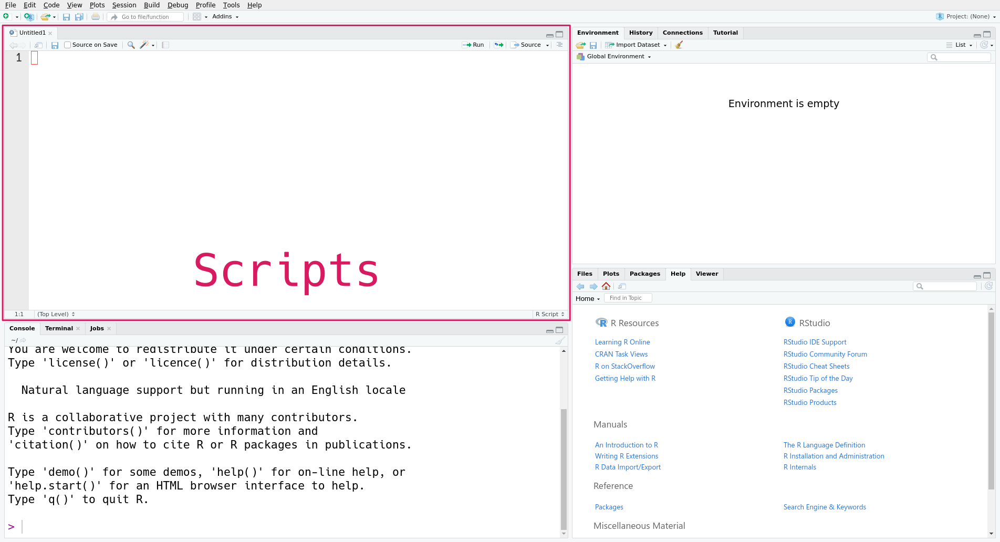

getwd()[1] "/home/nick/foundry/datalab/teaching/r_basics"After this lesson, you should be able to:
This chapter will help you get started working with files in R. First, we explain how to save (and load) your code, so that you can work on it incrementally and share it with colleagues. After that, we explain how to read a dataset from a file into R.
When you start a new project, it’s a good idea to create a specific directory for all of the project’s files. If you’re using R, you should also store your R code in that directory. As you work, periodically save your code.
Most of the time, you won’t just write code directly into the R console. Reproducibility and reusability are important benefits of R over point-and-click software, and in order to realize these, you have to save your code to your computer’s hard drive.
The most common way to save R code is as an R script with the extension .R (see Section 2.3 for more about extensions). Editing a script is similar to editing any other text file. You can write, delete, copy, cut, and paste code.
In RStudio, you can create a new R script with this menu option:
File -> New File -> R ScriptThis will open a new pane in RStudio, like this:

The new pane is the scripts pane, which displays all of the R scripts you’re editing. Each script appears in a separate tab. In the screenshot, only one script, the new script, is open.
Every line in an R script must be valid R code. Anything else you want to write in the script (notes, documentation, etc.) must be placed in a comment.
Arrange your code in the order of the steps to solve the problem, even if you write some parts before others. Comment out or delete any lines of code that you try but ultimately decide you don’t need. Make sure to save the file periodically so that you don’t lose your work. Following these guidelines will help you stay organized and make it easier to share your code with others later.
While editing, you can run the current line in the R console by pressing Ctrl-Enter on Windows and Linux, or Cmd-Enter on macOS. This way you can test and correct your code as you write it.
You can source (that is, run) an entire R script by calling the source function with the path to the script as an argument. This is also what the “Source on Save” check box refers to in RStudio. The code runs in order, only stopping if an error occurs.
For instance, if you save the script as my_cool_script.R, then you can enter source("my_cool_script.R") in the console to run the entire script. Pay attention to the path—it may be different on your computer.
In the context of data science, a notebook is an interactive file that can store a mix of code, formatted text, and images. With a notebook, you can write, run code, and view results all in one place. Viewing and editing a notebook requires a web browser or IDE. Some notebooks can also be converted to static documents, such as PDFs. Comments are a good way keep notes as you develop and run your code, but notebooks provide much more flexibility of expression. Notebooks are a kind of literate programming.
Notebooks excel when you want to do highly interactive work and/or want to communicate results. Use notebooks to prototype code, analyze data, refine plots, generate documents and presentations, and practice programming. Scripts excel when you want to reuse code (and perhaps share it as a package) or want to run code that doesn’t require much user interaction (such as time-consuming computations you’ll run on a server or high-performance computing cluster). The remainder of this reader assumes you’re using an R script rather than the R console or a notebook, unless otherwise noted.
Quarto is a popular notebook format and system for R. It also supports Python, Julia, and other programming languages. Quarto files have the extension .qmd. Quarto is based on an older notebook format, R Markdown, which only supports R and can’t be converted to as many kinds of documents. R Markdown is still widely used. R Markdown files have the extension .Rmd.
In order to use Quarto, you must first download and install it. It is not included with R or RStudio.
After installing Quarto, you can create a new Quarto file in RStudio with this menu option:
File -> New -> Quarto Document...RStudio will prompt you to provide some details about the purpose of the file.
Notebooks are subdivided into chunks (or cells). You can create as many chunks as you like, but each chunk can contain only one kind of content. You can run a code chunk by clicking on the chunk and pressing Ctrl-Enter. The notebook will display the result.
Markdown is a simple language you can use to add formatting to (non-code) text in a notebook. For example, surrounding a word with asterisks, as in Let *sleeping* dogs lie, makes the surrounded word italic. You can find a short, interactive tutorial about Markdown here.
To learn more about Quarto, see the official documentation.
The working directory is the starting point R uses for relative paths (see Appendix A for a refresher on file paths). Think of the working directory as the directory R is currently “at” or watching.
The function getwd returns the absolute path for the current working directory, as a string. It doesn’t require any arguments:
getwd()[1] "/home/nick/foundry/datalab/teaching/r_basics"On your computer, the output from getwd will likely be different. This is a very useful function for getting your bearings when you write relative paths. If you write a relative path and it doesn’t work as expected, the first thing to do is check the working directory.
The related setwd function changes the working directory. It takes one argument: a path to the new working directory. Here’s an example:
setwd("..")
# Now check the working directory.
getwd()In your R scripts and notebooks, avoid calls to setwd. They make your code more difficult to understand and to run on other computers. Use appropriate relative paths instead.
In the R console, it’s okay to occasionally use setwd. You might need to change the working directory before you run some code. R’s default working directory is your home directory. In some cases, such as when you open a project, RStudio will automatically change the working directory. However, it doesn’t always change the working directory, so setwd is sometimes still necessary.
Another function that’s useful for dealing with the working directory and file system is list.files. The list.files function returns the names of all of the files and directories inside of a directory. It accepts a path to a directory as an argument, or assumes the working directory if you don’t pass a path. For instance:
# List files and directories in /home/.
list.files("/home/")[1] "lost+found" "nick" # List files and directories in the working directory.
list.files() [1] "_build" "_freeze" "_quarto.yml" "assessment"
[5] "chapters" "CONTRIBUTING.md" "data" "images"
[9] "index.html" "index.qmd" "LICENSE" "notes"
[13] "pixi.lock" "pixi.toml" "R" "README.md"
[17] "site_libs" As usual, since you have a different computer, you’re likely to see different output if you run this code. If you call list.files with an invalid path or an empty directory, the output is character(0):
list.files("/this/path/is/fake/")character(0)Later on, you’ll learn about what character(0) means more generally.
Analyzing datasets is one of the most common things to do in R. The first step is to get R to read your data. Datasets come in a variety of file formats, and you need to identify the format in order to tell R how to read the data.
Most of the time, you can guess the format of a file by looking at its extension, the characters (usually three) after the last dot . in the filename. For example, the extension .jpg or .jpeg indicates a JPEG image file. Some operating systems hide extensions by default, but you can find instructions to change this setting online by searching for “show file extensions” and your operating system’s name. The extension is just part of the file’s name, so it should be taken as a hint about the file’s format rather than a guarantee.
R has built-in functions for reading a variety of formats. The R community also provides packages (Section 1.5) to read even more formats. For now, let’s focus on datasets that can be read with R’s built-in functions.
Here are several formats that are frequently used to distribute data, along with the name of a built-in function or contributed package that can read the format:
| Name | Extension | Function or Package | Tabular? | Text? |
|---|---|---|---|---|
| Comma-separated Values | .csv |
read.csv |
Yes | Yes |
| Tab-separated Values | .tsv |
read.delim |
Yes | Yes |
| Fixed-width File | .fwf |
read.fwf |
Yes | Yes |
| Microsoft Excel | .xlsx |
readr package | Yes | No |
| Microsoft Excel 1993-2007 | .xls |
readr package | Yes | No |
| Apache Arrow | .feather |
arrow package | Yes | No |
| R Data | .rds |
readRDS |
Sometimes | No |
| R Data | .rda |
load |
Sometimes | No |
| Plaintext | .txt |
readLines |
Sometimes | Yes |
| Extensible Markup Language | .xml |
xml2 package | No | Yes |
| JavaScript Object Notation | .json |
jsonlite package | No | Yes |
A tabular dataset is one that’s structured as a table, with rows and columns. This reader focuses on tabular datasets, since they’re common in practice and present the fewest programming challenges. Here’s an example of a tabular dataset:
| Fruit | Quantity | Price |
|---|---|---|
| apple | 32 | 1.49 |
| banana | 541 | 0.79 |
| pear | 10 | 1.99 |
A text file is a file that contains human-readable lines of text. You can check this by opening the file with a text editor such as Microsoft Notepad or macOS TextEdit. Many file formats use text in order to make the format easier to work with.
For instance, a comma-separated values (CSV) file records a tabular data using one line per row, with commas separating columns. If you store the table above in a CSV file and open the file in a text editor, here’s what you’ll see:
Fruit,Quantity,Price
apple,32,1.49
banana,541,0.79
pear,10,1.99A binary file is one that’s not human-readable. You can’t just read off the data if you open a binary file in a text editor, but they have a number of other advantages. Compared to text files, binary files are often faster to read and take up less storage space (bytes).
As an example, R’s built-in binary format is called RDS (which may stand for “R data serialized”). RDS files are extremely useful for backing up work, since they can store any kind of R object, even ones that are not tabular. You can learn more about how to create an RDS file on the ?saveRDS help page, and how to read one on the ?readRDS help page.
The California least tern is a endangered subspecies of seabird that nests along the coast of California and Mexico. The California Department of Fish and Wildlife (CDFW) monitors least tern nesting sites across the state to estimate breeding pairs, fledglings, and predator activity in each annual breeding season.

The CDFW publishes most of the data it collects to the California Open Data portal. The examples in this and subsequent chapters use a cleaned 2000-2023 version of the California least tern data.
Click here to download the 2000-2023 California least tern dataset.
If you haven’t already, we recommend you create a directory for this workshop. In your workshop directory, create a data/ subdirectory. Download and save the California least tern dataset in the data/ subdirectory.
Each row in the dataset contains measurements from one year-site combination.
| Column | Description |
|---|---|
year |
Year of the breeding season |
site_name |
Site name |
site_name_2013_2018 |
Site name from 2013-2018 |
site_name_1988_2001 |
Site name from 1988-2001 |
site_abbr |
Abbreviated site name |
region_3 |
Region of state: S.F. Bay, Central, or Southern (includes Ventura) |
region_4 |
Region of state: S.F. Bay, Central, Ventura, or Southern |
event |
Climate events |
bp_min |
Reported minimum breeding pairs |
bp_max |
Reported maximum breeding pairs |
fl_min |
Reported minimum fledges |
fl_max |
Reported maximum fledges |
total_nests |
Total reported nests (maximum if a range was reported) |
nonpred_eggs |
Total non-predator-related mortalities of eggs |
nonpred_chicks |
Total non-predator-related mortalities of chicks |
nonpred_fl |
Total non-predator-related mortalities of fledges |
nonpred_ad |
Total non-predator-related mortalities of adults |
pred_control |
Site predator control (yes/no) |
pred_eggs |
Total predator-related mortalities of eggs |
pred_chicks |
Total predator-related mortalities of chicks |
pred_fl |
Total predator-related mortalities of fledges |
pred_ad |
Total predator-related mortalities of adults |
pred_pefa |
Predation by peregrine falcons (yes/no) |
pred_coy_fox |
Predation by coyotes or foxes (yes/no) |
pred_meso |
Predation by other mesocarnivores: dogs, cats, skunks, opossums, raccoons, weasels, etc. (yes/no) |
pred_owlspp |
Predation by owls (yes/no) |
pred_corvid |
Predation by corvids: ravens or crows (yes/no) |
pred_other_raptor |
Predation by raptors other than peregrine falcons and owls (yes/no) |
pred_other_avian |
Predation by birds other than raptors and corvids (yes/no) |
pred_misc |
Predation by other animals (yes/no) |
total_pefa |
Total mortalities due to peregrine falcons |
total_coy_fox |
Total mortalities due to coyotes and foxes |
total_meso |
Total mortalities due to other mesocarnivores |
total_owlspp |
Total mortalities due to owls |
total_corvid |
Total mortalities due to ravens and crows |
total_other_raptor |
Total mortalities due to other raptors |
total_other_avian |
Total mortalities due to other birds |
total_misc |
Total mortalities due to other animals |
first_observed |
Date CA least terns first observed at site |
last_observed |
Date CA least terns last observed at site |
first_nest |
Date first egg observed at site |
first_chick |
Date first chick observed at site |
first_fledge |
Date first fledge observed at site |
The messy source dataset (with more years and more columns) is available here.
Let’s use R to read the California least tern dataset. The dataset is in a file called is 2000-2023_ca_least_tern.csv, which suggests it’s a CSV file. The function to read a CSV file is read.csv. The function’s first and only required argument is the path to the CSV file.
In the following code, the path to the California least tern dataset is data/2000-2023_ca_least_tern.csv, but it might be different for you, depending on R’s working directory and where you saved the file. We’ll save the result from the read.csv function in a variable called terns. We can use this variable to access the data in subsequent code.
terns = read.csv("data/2000-2023_ca_least_tern.csv")The variable name terns is arbitrary; you can choose something different if you want. However, in general, it’s a good habit to choose variable names that describe the contents of the variable somehow.
If you tried running the line of code above and got an error message, pay attention to what the error message says, and remember the strategies to get help from Section 1.4. The most common mistake when reading a file is incorrectly specifying the path, so first check that you got the path right.
If the code ran without errors, it’s a good idea to check that the dataset looks like what the documentation describes. When working with a new dataset, it usually isn’t a good idea to print the whole thing (at least until you know how big it is). Large datasets can take a long time to print, and the output can be difficult to read.
Instead, use the head function to print only the beginning, or head, of the dataset:
head(terns)| year | site_name | site_name_2013_2018 | site_name_1988_2001 | site_abbr | region_3 | region_4 | event | bp_min | bp_max | fl_min | fl_max | total_nests | nonpred_eggs | nonpred_chicks | nonpred_fl | nonpred_ad | pred_control | pred_eggs | pred_chicks | pred_fl | pred_ad | pred_pefa | pred_coy_fox | pred_meso | pred_owlspp | pred_corvid | pred_other_raptor | pred_other_avian | pred_misc | total_pefa | total_coy_fox | total_meso | total_owlspp | total_corvid | total_other_raptor | total_other_avian | total_misc | first_observed | last_observed | first_nest | first_chick | first_fledge |
|---|---|---|---|---|---|---|---|---|---|---|---|---|---|---|---|---|---|---|---|---|---|---|---|---|---|---|---|---|---|---|---|---|---|---|---|---|---|---|---|---|---|---|
| 2000 | PITTSBURG POWER PLANT | Pittsburg Power Plant | NA_2013_2018 POLYGON | PITT_POWER | S.F._BAY | S.F._BAY | LA_NINA | 15 | 15 | 16 | 18 | 15 | 3 | 0 | 0 | 0 | 4 | 2 | 0 | 0 | N | N | N | N | Y | Y | N | N | 0 | 0 | 0 | 0 | 4 | 2 | 0 | 0 | 2000-05-11 | 2000-08-05 | 2000-05-26 | 2000-06-18 | 2000-07-08 | |
| 2000 | ALBANY CENTRAL AVE | NA_NO POLYGON | Albany Central Avenue | AL_CENTAVE | S.F._BAY | S.F._BAY | LA_NINA | 6 | 12 | 1 | 1 | 20 | NA | NA | NA | NA | NA | NA | NA | NA | NA | NA | NA | NA | NA | NA | NA | NA | ||||||||||||||
| 2000 | ALAMEDA POINT | Alameda Point | NA_2013_2018 POLYGON | ALAM_PT | S.F._BAY | S.F._BAY | LA_NINA | 282 | 301 | 200 | 230 | 312 | 124 | 81 | 2 | 1 | 17 | 0 | 0 | 0 | N | N | N | N | N | Y | Y | N | 0 | 0 | 0 | 0 | 0 | 6 | 11 | 0 | 2000-05-01 | 2000-08-19 | 2000-05-16 | 2000-06-07 | 2000-06-30 | |
| 2000 | KETTLEMAN CITY | Kettleman | NA_2013_2018 POLYGON | KET_CTY | KINGS | KINGS | LA_NINA | 2 | 3 | 1 | 2 | 3 | NA | 3 | 1 | 6 | NA | NA | NA | NA | NA | NA | NA | NA | NA | NA | NA | NA | 2000-06-10 | 2000-09-24 | 2000-06-17 | 2000-07-22 | 2000-08-06 | |||||||||
| 2000 | OCEANO DUNES STATE VEHICULAR RECREATION AREA | Oceano Dunes State Vehicular Recreation Area | NA_2013_2018 POLYGON | OCEANO_DUNES | CENTRAL | CENTRAL | LA_NINA | 4 | 5 | 4 | 4 | 5 | 2 | 0 | 0 | 0 | 0 | 4 | 0 | 0 | N | N | N | N | N | N | Y | N | 0 | 0 | 0 | 0 | 0 | 0 | 4 | 0 | 2000-05-04 | 2000-08-30 | 2000-05-28 | 2000-06-20 | 2000-07-13 | |
| 2000 | RANCHO GUADALUPE DUNES PRESERVE | Rancho Guadalupe Dunes Preserve | NA_2013_2018 POLYGON | RGDP | CENTRAL | CENTRAL | LA_NINA | 9 | 9 | 17 | 17 | 9 | 0 | 1 | 0 | 0 | NA | NA | NA | NA | NA | NA | NA | NA | NA | NA | NA | NA | 2000-05-07 | 2000-08-13 | 2000-05-31 | 2000-06-22 | 2000-07-20 |
If you run this code and see a similar table, then congratulations, you’ve read your first dataset into R! ✨
The California least terns dataset is tabular—as you might have already guessed, since it came from a CSV file. In R, it’s represented by a data frame, a table with rows and columns. R uses data frames to represent most (but not all) kinds of tabular data. The read.csv function, which you used to read this data, always returns a data frame.
Typically, each row in a data frame corresponds to a single subject and is called an observation. Each column corresponds to a measurement of the subject and is called a feature or covariate.
Sometimes people also refer to columns as “variables,” but we’ll try to avoid this, because in programming contexts a variable is a name for a value (which might not be a column).
When you first read an object into R, you might not know whether it’s a data frame. One way to check is visually, by printing it (as you just did with head). A better way to check is with the class function, which returns information about what an object is. For a data frame, the result will always contain data.frame:
class(terns)[1] "data.frame"You’ll learn more about classes in Section 6.1, but for now you can use this function to identify data frames.
Similar to how the head function shows the first six rows of a data frame, the tail function shows the last six:
tail(terns) year site_name site_name_2013_2018
786 2023 NAS NORTH ISLAND Naval Base Coronado
787 2023 NAVAL AMPHIBIOUS BASE CORONADO Naval Base Coronado
788 2023 DSTREET FILL SWEETWATER MARSH NWR D Street Fill
789 2023 CHULA VISTA WILDLIFE RESERVE Chula Vista Wildlife Refuge
790 2023 SOUTH SAN DIEGO BAY UNIT SDNWR SALTWORKS Saltworks
791 2023 TIJUANA ESTUARY NERR Tijuana Estuary
site_name_1988_2001 site_abbr region_3 region_4 event bp_min bp_max
786 NA_2013_2018 POLYGON NASNI SOUTHERN SOUTHERN LA_NINA 0 0
787 NA_2013_2018 POLYGON NAB SOUTHERN SOUTHERN LA_NINA 596 644
788 NA_2013_2018 POLYGON D_ST SOUTHERN SOUTHERN LA_NINA 29 38
789 NA_2013_2018 POLYGON CV SOUTHERN SOUTHERN LA_NINA 47 54
790 NA_2013_2018 POLYGON SALT SOUTHERN SOUTHERN LA_NINA 38 41
791 NA_2013_2018 POLYGON TJ_RIV SOUTHERN SOUTHERN LA_NINA 144 165
fl_min fl_max total_nests nonpred_eggs nonpred_chicks nonpred_fl nonpred_ad
786 0 0 0 0 0 0 0
787 90 128 717 329 185 6 6
788 4 4 44 25 2 0 0
789 5 6 59 32 1 0 0
790 7 7 48 11 2 0 0
791 35 35 171 65 44 1 1
pred_control pred_eggs pred_chicks pred_fl pred_ad pred_pefa pred_coy_fox
786 Y NA NA NA NA N N
787 Y NA NA NA NA N N
788 Y NA NA NA NA Y N
789 Y NA NA NA NA Y N
790 Y NA NA NA NA Y Y
791 Y NA NA NA NA N N
pred_meso pred_owlspp pred_corvid pred_other_raptor pred_other_avian
786 N N N N N
787 N N Y N Y
788 N N N Y Y
789 N N N N N
790 N N N Y N
791 N N N N Y
pred_misc total_pefa total_coy_fox total_meso total_owlspp total_corvid
786 N NA NA NA NA NA
787 Y NA NA NA NA NA
788 Y NA NA NA NA NA
789 Y NA NA NA NA NA
790 Y NA NA NA NA NA
791 Y NA NA NA NA NA
total_other_raptor total_other_avian total_misc first_observed
786 NA NA NA
787 NA NA NA 2023-04-22
788 NA NA NA 2023-04-20
789 NA NA NA 2023-04-20
790 NA NA NA 2023-04-24
791 NA NA NA 2023-04-26
last_observed first_nest first_chick first_fledge
786
787 2023-09-09 2023-05-07 2023-05-31
788 2023-08-24 2023-05-12 2023-06-05
789 2023-09-22 2023-05-14 2023-06-05
790 2023-09-22 2023-05-19 2023-06-09
791 2023-08-28 2023-05-12 2023-06-10 If there are lots of columns or the columns are wide, as is the case here, R wraps the output across lines.
Both head and tail accept an optional second argument that specifies the number of rows to print:
head(terns, 1) year site_name site_name_2013_2018 site_name_1988_2001
1 2000 PITTSBURG POWER PLANT Pittsburg Power Plant NA_2013_2018 POLYGON
site_abbr region_3 region_4 event bp_min bp_max fl_min fl_max total_nests
1 PITT_POWER S.F._BAY S.F._BAY LA_NINA 15 15 16 18 15
nonpred_eggs nonpred_chicks nonpred_fl nonpred_ad pred_control pred_eggs
1 3 0 0 0 4
pred_chicks pred_fl pred_ad pred_pefa pred_coy_fox pred_meso pred_owlspp
1 2 0 0 N N N N
pred_corvid pred_other_raptor pred_other_avian pred_misc total_pefa
1 Y Y N N 0
total_coy_fox total_meso total_owlspp total_corvid total_other_raptor
1 0 0 0 4 2
total_other_avian total_misc first_observed last_observed first_nest
1 0 0 2000-05-11 2000-08-05 2000-05-26
first_chick first_fledge
1 2000-06-18 2000-07-08One way to get a quick idea of what your data looks like without having to skim through all the columns and rows is by inspecting its dimensions. This is the number of rows and columns in a data frame, and you can access this information with the dim function:
dim(terns)[1] 791 43So this dataset has 791 rows and 43 columns. As an alternative to the dim function, you can use the nrow and ncol functions to get just the number of rows and number of columns, respectively.
Since the columns have names, you might also want to get just these. You can do that with the names or colnames functions. Both return the same result:
names(terns) [1] "year" "site_name" "site_name_2013_2018"
[4] "site_name_1988_2001" "site_abbr" "region_3"
[7] "region_4" "event" "bp_min"
[10] "bp_max" "fl_min" "fl_max"
[13] "total_nests" "nonpred_eggs" "nonpred_chicks"
[16] "nonpred_fl" "nonpred_ad" "pred_control"
[19] "pred_eggs" "pred_chicks" "pred_fl"
[22] "pred_ad" "pred_pefa" "pred_coy_fox"
[25] "pred_meso" "pred_owlspp" "pred_corvid"
[28] "pred_other_raptor" "pred_other_avian" "pred_misc"
[31] "total_pefa" "total_coy_fox" "total_meso"
[34] "total_owlspp" "total_corvid" "total_other_raptor"
[37] "total_other_avian" "total_misc" "first_observed"
[40] "last_observed" "first_nest" "first_chick"
[43] "first_fledge" colnames(terns) [1] "year" "site_name" "site_name_2013_2018"
[4] "site_name_1988_2001" "site_abbr" "region_3"
[7] "region_4" "event" "bp_min"
[10] "bp_max" "fl_min" "fl_max"
[13] "total_nests" "nonpred_eggs" "nonpred_chicks"
[16] "nonpred_fl" "nonpred_ad" "pred_control"
[19] "pred_eggs" "pred_chicks" "pred_fl"
[22] "pred_ad" "pred_pefa" "pred_coy_fox"
[25] "pred_meso" "pred_owlspp" "pred_corvid"
[28] "pred_other_raptor" "pred_other_avian" "pred_misc"
[31] "total_pefa" "total_coy_fox" "total_meso"
[34] "total_owlspp" "total_corvid" "total_other_raptor"
[37] "total_other_avian" "total_misc" "first_observed"
[40] "last_observed" "first_nest" "first_chick"
[43] "first_fledge" If the rows have names, you can get those with the rownames function. For this particular dataset, the rows don’t have names.
An efficient way to get a sense of what’s actually in a dataset is to have R compute summary information. This works especially well for data frames, but also applies to other data. R provides two different functions to get summaries: str and summary.
The str function returns a structural summary of an object. This kind of summary tells us about the structure of the data—the number of rows, the number and names of columns, what kind of data is in each column, and some sample values. Here’s the structural summary for the least terns dataset:
str(terns)'data.frame': 791 obs. of 43 variables:
$ year : int 2000 2000 2000 2000 2000 2000 2000 2000 2000 2000 ...
$ site_name : chr "PITTSBURG POWER PLANT" "ALBANY CENTRAL AVE" "ALAMEDA POINT" "KETTLEMAN CITY" ...
$ site_name_2013_2018: chr "Pittsburg Power Plant" "NA_NO POLYGON" "Alameda Point" "Kettleman" ...
$ site_name_1988_2001: chr "NA_2013_2018 POLYGON" "Albany Central Avenue" "NA_2013_2018 POLYGON" "NA_2013_2018 POLYGON" ...
$ site_abbr : chr "PITT_POWER" "AL_CENTAVE" "ALAM_PT" "KET_CTY" ...
$ region_3 : chr "S.F._BAY" "S.F._BAY" "S.F._BAY" "KINGS" ...
$ region_4 : chr "S.F._BAY" "S.F._BAY" "S.F._BAY" "KINGS" ...
$ event : chr "LA_NINA" "LA_NINA" "LA_NINA" "LA_NINA" ...
$ bp_min : num 15 6 282 2 4 9 30 21 73 166 ...
$ bp_max : num 15 12 301 3 5 9 32 21 73 167 ...
$ fl_min : int 16 1 200 1 4 17 11 9 60 64 ...
$ fl_max : int 18 1 230 2 4 17 11 9 65 64 ...
$ total_nests : int 15 20 312 3 5 9 32 22 73 252 ...
$ nonpred_eggs : int 3 NA 124 NA 2 0 NA 4 2 NA ...
$ nonpred_chicks : int 0 NA 81 3 0 1 27 3 0 NA ...
$ nonpred_fl : int 0 NA 2 1 0 0 0 NA 0 NA ...
$ nonpred_ad : int 0 NA 1 6 0 0 0 NA 0 NA ...
$ pred_control : chr "" "" "" "" ...
$ pred_eggs : int 4 NA 17 NA 0 NA 0 NA NA NA ...
$ pred_chicks : int 2 NA 0 NA 4 NA 3 NA NA NA ...
$ pred_fl : int 0 NA 0 NA 0 NA 0 NA NA NA ...
$ pred_ad : int 0 NA 0 NA 0 NA 0 NA NA NA ...
$ pred_pefa : chr "N" "" "N" "" ...
$ pred_coy_fox : chr "N" "" "N" "" ...
$ pred_meso : chr "N" "" "N" "" ...
$ pred_owlspp : chr "N" "" "N" "" ...
$ pred_corvid : chr "Y" "" "N" "" ...
$ pred_other_raptor : chr "Y" "" "Y" "" ...
$ pred_other_avian : chr "N" "" "Y" "" ...
$ pred_misc : chr "N" "" "N" "" ...
$ total_pefa : int 0 NA 0 NA 0 NA 0 NA NA NA ...
$ total_coy_fox : int 0 NA 0 NA 0 NA 0 NA NA NA ...
$ total_meso : int 0 NA 0 NA 0 NA 0 NA NA NA ...
$ total_owlspp : int 0 NA 0 NA 0 NA 0 NA NA NA ...
$ total_corvid : int 4 NA 0 NA 0 NA 0 NA NA NA ...
$ total_other_raptor : int 2 NA 6 NA 0 NA 3 NA NA NA ...
$ total_other_avian : int 0 NA 11 NA 4 NA 0 NA NA NA ...
$ total_misc : int 0 NA 0 NA 0 NA 0 NA NA NA ...
$ first_observed : chr "2000-05-11" "" "2000-05-01" "2000-06-10" ...
$ last_observed : chr "2000-08-05" "" "2000-08-19" "2000-09-24" ...
$ first_nest : chr "2000-05-26" "" "2000-05-16" "2000-06-17" ...
$ first_chick : chr "2000-06-18" "" "2000-06-07" "2000-07-22" ...
$ first_fledge : chr "2000-07-08" "" "2000-06-30" "2000-08-06" ...This summary lists information about each column, and includes most of what you found earlier by using several different functions separately. The summary uses chr to indicate columns of text (“characters”) and int to indicate columns of integers.
In contrast to str, the summary function returns a statistical summary of an object. This summary includes summary statistics for each column, choosing appropriate statistics based on the kind of data in the column. For numbers, this is generally the mean, median, and quantiles. For categories, this is the frequencies. Other kinds of statistics are shown for other kinds of data. Here’s the statistical summary for the least terns dataset:
summary(terns) year site_name site_name_2013_2018 site_name_1988_2001
Min. :2000 Length:791 Length:791 Length:791
1st Qu.:2008 Class :character Class :character Class :character
Median :2013 Mode :character Mode :character Mode :character
Mean :2013
3rd Qu.:2018
Max. :2023
site_abbr region_3 region_4 event
Length:791 Length:791 Length:791 Length:791
Class :character Class :character Class :character Class :character
Mode :character Mode :character Mode :character Mode :character
bp_min bp_max fl_min fl_max
Min. : 0.0 Min. : 0.0 Min. : 0.00 Min. : 0.00
1st Qu.: 3.0 1st Qu.: 5.0 1st Qu.: 0.00 1st Qu.: 0.00
Median : 30.0 Median : 38.0 Median : 7.00 Median : 9.00
Mean : 129.3 Mean : 151.0 Mean : 40.82 Mean : 50.35
3rd Qu.: 127.5 3rd Qu.: 148.5 3rd Qu.: 38.00 3rd Qu.: 47.50
Max. :1691.0 Max. :1691.0 Max. :1025.00 Max. :1145.00
NA's :8 NA's :8 NA's :12 NA's :12
total_nests nonpred_eggs nonpred_chicks nonpred_fl
Min. : 0.0 Min. : 0.00 Min. : 0.00 Min. : 0.000
1st Qu.: 5.0 1st Qu.: 2.00 1st Qu.: 0.00 1st Qu.: 0.000
Median : 42.0 Median : 12.00 Median : 3.00 Median : 0.000
Mean : 162.8 Mean : 60.29 Mean : 44.37 Mean : 4.181
3rd Qu.: 164.0 3rd Qu.: 69.00 3rd Qu.: 22.00 3rd Qu.: 2.000
Max. :1741.0 Max. :748.00 Max. :1063.00 Max. :207.000
NA's :8 NA's :164 NA's :198 NA's :240
nonpred_ad pred_control pred_eggs pred_chicks
Min. : 0.000 Length:791 Min. : 0.00 Min. : 0.000
1st Qu.: 0.000 Class :character 1st Qu.: 2.00 1st Qu.: 0.000
Median : 0.000 Mode :character Median : 6.50 Median : 2.000
Mean : 0.851 Mean : 41.57 Mean : 8.519
3rd Qu.: 1.000 3rd Qu.: 25.50 3rd Qu.: 7.500
Max. :22.000 Max. :417.00 Max. :149.000
NA's :234 NA's :737 NA's :737
pred_fl pred_ad pred_pefa pred_coy_fox
Min. : 0.000 Min. : 0.00 Length:791 Length:791
1st Qu.: 0.000 1st Qu.: 0.00 Class :character Class :character
Median : 0.000 Median : 0.50 Mode :character Mode :character
Mean : 2.365 Mean : 2.69
3rd Qu.: 2.000 3rd Qu.: 2.00
Max. :23.000 Max. :41.00
NA's :739 NA's :733
pred_meso pred_owlspp pred_corvid pred_other_raptor
Length:791 Length:791 Length:791 Length:791
Class :character Class :character Class :character Class :character
Mode :character Mode :character Mode :character Mode :character
pred_other_avian pred_misc total_pefa total_coy_fox
Length:791 Length:791 Min. : 0.000 Min. : 0.000
Class :character Class :character 1st Qu.: 0.000 1st Qu.: 0.000
Mode :character Mode :character Median : 0.000 Median : 0.000
Mean : 1.741 Mean : 9.464
3rd Qu.: 0.000 3rd Qu.: 0.000
Max. :34.000 Max. :348.000
NA's :737 NA's :735
total_meso total_owlspp total_corvid total_other_raptor
Min. : 0.000 Min. : 0.000 Min. : 0.000 Min. : 0.000
1st Qu.: 0.000 1st Qu.: 0.000 1st Qu.: 0.000 1st Qu.: 0.000
Median : 0.000 Median : 0.000 Median : 0.000 Median : 0.000
Mean : 5.556 Mean : 1.455 Mean : 7.962 Mean : 1.712
3rd Qu.: 0.000 3rd Qu.: 0.500 3rd Qu.: 2.000 3rd Qu.: 1.000
Max. :244.000 Max. :41.000 Max. :177.000 Max. :43.000
NA's :737 NA's :736 NA's :739 NA's :739
total_other_avian total_misc first_observed last_observed
Min. : 0.000 Min. : 0.000 Length:791 Length:791
1st Qu.: 0.000 1st Qu.: 0.000 Class :character Class :character
Median : 0.000 Median : 0.000 Mode :character Mode :character
Mean : 8.898 Mean : 6.566
3rd Qu.: 2.000 3rd Qu.: 0.000
Max. :140.000 Max. :168.000
NA's :742 NA's :738
first_nest first_chick first_fledge
Length:791 Length:791 Length:791
Class :character Class :character Class :character
Mode :character Mode :character Mode :character
You can select an individual column from a data frame by name with $, the dollar sign operator. The syntax is:
VARIABLE$COLUMN_NAMEFor example, for the least terns dataset, terns$year selects the year column, which is the year of observation:
terns$year [1] 2000 2000 2000 2000 2000 2000 2000 2000 2000 2000 2000 2000 2000 2000 2000
[16] 2000 2000 2000 2000 2000 2000 2000 2000 2000 2000 2000 2000 2000 2000 2004
[31] 2004 2004 2004 2004 2004 2004 2004 2004 2004 2004 2004 2004 2004 2004 2004
[46] 2004 2004 2004 2004 2004 2004 2004 2004 2004 2004 2004 2004 2004 2004 2004
[61] 2004 2004 2004 2005 2005 2005 2005 2005 2005 2005 2005 2005 2005 2005 2005
[76] 2005 2005 2005 2005 2005 2005 2005 2005 2005 2005 2005 2005 2005 2005 2005
[91] 2005 2005 2005 2005 2006 2006 2006 2006 2006 2006 2006 2006 2006 2006 2006
[106] 2006 2006 2006 2006 2006 2006 2006 2006 2006 2006 2006 2006 2006 2006 2006
[121] 2006 2006 2006 2006 2006 2006 2006 2007 2007 2007 2007 2007 2007 2007 2007
[136] 2007 2007 2007 2007 2007 2007 2007 2007 2007 2007 2007 2007 2007 2007 2007
[151] 2007 2007 2007 2007 2007 2007 2007 2007 2007 2007 2007 2007 2007 2007 2008
[166] 2008 2008 2008 2008 2008 2008 2008 2008 2008 2008 2008 2008 2008 2008 2008
[181] 2008 2008 2008 2008 2008 2008 2008 2008 2008 2008 2008 2008 2008 2008 2008
[196] 2008 2008 2008 2008 2008 2008 2008 2009 2009 2009 2009 2009 2009 2009 2009
[211] 2009 2009 2009 2009 2009 2009 2009 2009 2009 2009 2009 2009 2009 2009 2009
[226] 2009 2009 2009 2009 2009 2009 2009 2009 2009 2009 2009 2009 2009 2009 2009
[241] 2009 2009 2010 2010 2010 2010 2010 2010 2010 2010 2010 2010 2010 2010 2010
[256] 2010 2010 2010 2010 2010 2010 2010 2010 2010 2010 2010 2010 2010 2010 2010
[271] 2010 2010 2010 2010 2010 2010 2010 2010 2010 2010 2010 2010 2011 2011 2011
[286] 2011 2011 2011 2011 2011 2011 2011 2011 2011 2011 2011 2011 2011 2011 2011
[301] 2011 2011 2011 2011 2011 2011 2011 2011 2011 2011 2011 2011 2011 2011 2011
[316] 2011 2011 2011 2011 2011 2011 2011 2011 2012 2012 2012 2012 2012 2012 2012
[331] 2012 2012 2012 2012 2012 2012 2012 2012 2012 2012 2012 2012 2012 2012 2012
[346] 2012 2012 2012 2012 2012 2012 2012 2012 2012 2012 2012 2012 2012 2012 2012
[361] 2012 2012 2012 2012 2013 2013 2013 2013 2013 2013 2013 2013 2013 2013 2013
[376] 2013 2013 2013 2013 2013 2013 2013 2013 2013 2013 2013 2013 2013 2013 2013
[391] 2013 2013 2013 2013 2013 2013 2013 2013 2013 2013 2013 2013 2013 2013 2013
[406] 2013 2014 2014 2014 2014 2014 2014 2014 2014 2014 2014 2014 2014 2014 2014
[421] 2014 2014 2014 2014 2014 2014 2014 2014 2014 2014 2014 2014 2014 2014 2014
[436] 2014 2014 2014 2014 2014 2014 2014 2014 2014 2014 2014 2014 2014 2015 2015
[451] 2015 2015 2015 2015 2015 2015 2015 2015 2015 2015 2015 2015 2015 2015 2015
[466] 2015 2015 2015 2015 2015 2015 2015 2015 2015 2015 2015 2015 2015 2015 2015
[481] 2015 2015 2015 2015 2015 2015 2015 2015 2015 2015 2016 2016 2016 2016 2016
[496] 2016 2016 2016 2016 2016 2016 2016 2016 2016 2016 2016 2016 2016 2016 2016
[511] 2016 2016 2016 2016 2016 2016 2016 2016 2016 2016 2016 2016 2016 2016 2016
[526] 2016 2016 2016 2016 2016 2016 2016 2016 2017 2017 2017 2017 2017 2017 2017
[541] 2017 2017 2017 2017 2017 2017 2017 2017 2017 2017 2017 2017 2017 2017 2017
[556] 2017 2017 2017 2017 2017 2017 2017 2017 2017 2017 2017 2017 2017 2017 2017
[571] 2017 2017 2017 2017 2017 2017 2017 2017 2018 2018 2018 2018 2018 2018 2018
[586] 2018 2018 2018 2018 2018 2018 2018 2018 2018 2018 2018 2018 2018 2018 2018
[601] 2018 2018 2018 2018 2018 2018 2018 2018 2018 2018 2018 2018 2019 2019 2019
[616] 2019 2019 2019 2019 2019 2019 2019 2019 2019 2019 2019 2019 2019 2019 2019
[631] 2019 2019 2019 2019 2019 2019 2019 2019 2019 2019 2019 2019 2019 2019 2019
[646] 2019 2019 2020 2020 2020 2020 2020 2020 2020 2020 2020 2020 2020 2020 2020
[661] 2020 2020 2020 2020 2020 2020 2020 2020 2020 2020 2020 2020 2020 2020 2020
[676] 2020 2020 2020 2020 2020 2020 2020 2021 2021 2021 2021 2021 2021 2021 2021
[691] 2021 2021 2021 2021 2021 2021 2021 2021 2021 2021 2021 2021 2021 2021 2021
[706] 2021 2021 2021 2021 2021 2021 2021 2021 2021 2021 2021 2021 2021 2022 2022
[721] 2022 2022 2022 2022 2022 2022 2022 2022 2022 2022 2022 2022 2022 2022 2022
[736] 2022 2022 2022 2022 2022 2022 2022 2022 2022 2022 2022 2022 2022 2022 2022
[751] 2022 2022 2022 2022 2023 2023 2023 2023 2023 2023 2023 2023 2023 2023 2023
[766] 2023 2023 2023 2023 2023 2023 2023 2023 2023 2023 2023 2023 2023 2023 2023
[781] 2023 2023 2023 2023 2023 2023 2023 2023 2023 2023 2023R provides a variety of functions to compute on columns (and other vectors of data). For instance, what if you want to know the time period the dataset covers? You can use the range function to compute the minimum and maximum of a column:
range(terns$year)[1] 2000 2023So the oldest observations are from 2000 and the newest are from 2023, although this function and output doesn’t tell us whether there are observations for the years in between.
You can count the observations for each year with the table function:
table(terns$year)
2000 2004 2005 2006 2007 2008 2009 2010 2011 2012 2013 2014 2015 2016 2017 2018
29 34 31 33 37 38 40 40 41 41 42 42 42 43 45 34
2019 2020 2021 2022 2023
35 35 36 36 37 The table function is great for summarizing columns of categories, where numerical statistics like means and standard deviations aren’t defined.
On the other hand, numerical statistics work well for summarizing columns of numbers. You can use the mean function to compute the mean of a column. For instance, let’s compute the mean of the total_nests column, which is the total number of nests seen at a site:
mean(terns$total_nests)[1] NAThe result is NA because column is missing some values (we’ll explain this in detail in Section 6.5.1). To compute the mean with only the values that are present, set na.rm = TRUE in the call to mean:
mean(terns$total_nests, na.rm = TRUE)[1] 162.8455You can also use the dollar sign operator to assign values to columns. For instance, to assign 2000 to the entire year column:
terns$year = 2000Be careful when you do this, as there is no undo. Fortunately, you haven’t saved this change to the least terns dataset to your computer’s hard drive yet, so you can reload the dataset to reset it:
terns = read.csv("data/2000-2023_ca_least_tern.csv")In Chapter 3, you’ll learn how to select rows and individual elements from a data frame, as well as other ways to select columns.
Choose a directory on your computer that you’re familiar with, such as one you created. Determine the path to the directory, then use list.files to display its contents. Do the files displayed match what you see in your system’s file browser?
What does the all.files parameter of list.files do? Give an example.
The read.table function is another function for reading tabular data. Take a look at the help file for read.table. Recall that read.csv reads tabular data where the values are separated by commas, and read.delim reads tabular data where the values are separated by tabs.
read.table expect by default?read.table to read a CSV? Explain. If your answer is yes, show how to use read.table to load the least terns dataset from